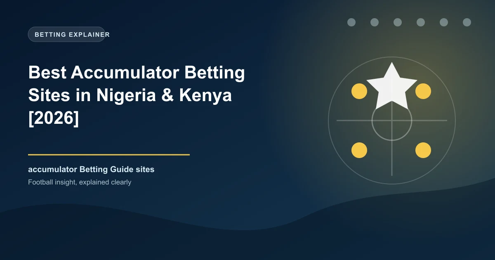

Accumulator bets are the most popular bet type in Africa. Nigerian and Kenyan bettors love the thrill of combining multiple selections for massive potential payouts. But not all betting sites treat accumulators equally. Some offer boosted odds on multiples, others provide insurance if one leg lets you down, and some cap their maximum acca payouts. We compared the top betting sites for accumulator betting so you can maximise your returns on every multiple bet you place.
Bet9ja is the best site for accumulator bets in Nigeria thanks to their generous "Acca Boost" feature. They automatically increase the total odds of your accumulator by 5-15% depending on the number of selections. A 5-fold acca gets a 5% boost, a 10-fold gets 10% boost, and their "Mega Acca" with 15+ selections gets a 15% boost on already competitive odds.
Bet9ja also offers "Acca Insurance" on select promotions where you get a free bet if one leg of your 5+ fold accumulator lets you down. Maximum payout on accumulators is ₦100 million (approximately $65,000), which is the highest in the Nigerian market. For virtual sports, Bet9ja offers dedicated accumulator options with boosted returns.
SportyBet offers the most consistent acca insurance in Nigeria. Their "Acca Shield" promotion gives you a free bet if one selection fails on a 5-fold or higher accumulator. This is a standing promotion rather than a limited-time offer, making it a reliable safety net for regular acca bettors.
SportyBet's acca boost is slightly lower than Bet9ja at 3-10% depending on selections, but their base odds are often competitive. The minimum stake for acca boost is ₦500, making it accessible for most bettors. SportyBet also features a "Bet Builder" that combines multiple markets from the same match into a single acca-style bet, which is great for in-play accumulators.
Betway is the best choice for high-stakes accumulator bettors. Their maximum acca payout is €500,000 (approx ₦350 million), dwarfing most competitors. Betway also offers "Acca Plus" which gives up to 70% bonus on winning 5+ fold accas in selected markets, one of the highest boost percentages in Africa.
Betway's selection of leagues for accumulators is excellent, covering everything from the Premier League to the NPFL. Their "Bet Builder" is also one of the most advanced available, allowing you to combine multiple markets from the same match including goals, cards, corners, and player stats into a single accumulator-style bet.
Betika dominates the Kenyan accumulator market with their famous "Mega Jackpot" accumulator. Pick 17 correct outcomes for a chance at KES 100 million+ jackpot. While this is technically a single accumulator, Betika also offers excellent standard acca betting with competitive odds on Kenyan and international leagues.
Betika's acca boost offers up to 10% on 10+ fold accumulators, and their "Acca Insurance" promotion gives free bets if one leg fails on selected markets. The platform is fully integrated with M-Pesa, making it effortless to place and manage accumulator bets from your phone.
1xBet allows the most selections per accumulator of any betting site available in Africa, with up to 30 selections in a single acca. Their "Multi-Boost" feature adds up to 25% to your winnings on accumulators of 8+ selections. With over 1,000 daily markets to choose from, you will never struggle to fill out your acca slip.
1xBet also offers "Acca Insurance" on 5+ fold bets where one selection lets you down. The maximum payout on accumulators is €100,000, which is competitive though lower than Betway's limit. 1xBet is available across Nigeria, Kenya, Ghana, Uganda, Tanzania, and South Africa, making it the most accessible option for pan-African bettors.
| Feature | Bet9ja | SportyBet | Betway | Betika | 1xBet |
|---|---|---|---|---|---|
| Acca Boost | 5-15% | 3-10% | Up to 70% | Up to 10% | Up to 25% |
| Acca Insurance | Promotions | Permanent | Selected markets | Selected markets | Permanent |
| Max Selections | 15+ | 10+ | 20+ | 17 | 30 |
| Max Payout | ₦100M | ₦50M | €500K | KES 100M | €100K |
| Bet Builder | No | Yes | Yes | No | Yes |
| Cash Out on Accas | Yes | Yes | Yes | Selected | Yes |
| Available In | Nigeria | Nigeria | Nigeria, Kenya | Kenya | Pan-Africa |
| M-Pesa | No | Yes | Yes | Yes | Yes |
Every major betting site in Africa now offers some form of accumulator boost. Always check that your acca qualifies for a boost before placing. A 10% boost on a 5-fold acca is essentially free value.
SportyBet's Acca Shield and 1xBet's acca insurance mean that if one leg of your 5+ fold acca fails, you get a free bet. This significantly reduces the risk of accumulator betting.
Don't put all selections from the same league. Combining the NPFL with the Premier League and Serie A gives you better coverage and reduces correlation risk.
Instead of combining different matches, try SportyBet or Betway's Bet Builder to combine multiple markets from one match. Team to win + over 2.5 goals + both teams to score creates a higher-odds single-match accumulator.
Generate optimized accumulator combinations from today's AI-powered predictions. Set your target odds and get instant ticket suggestions.
Free Ticket Builder →